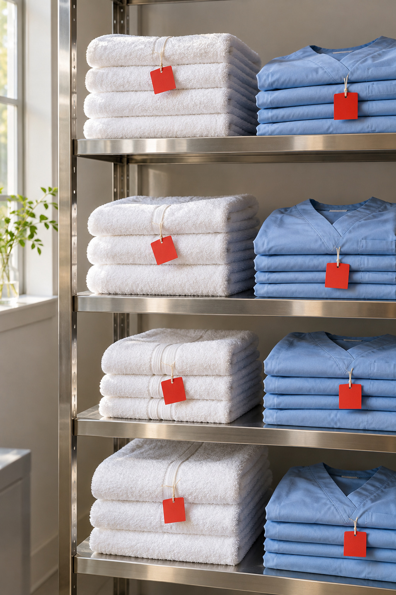
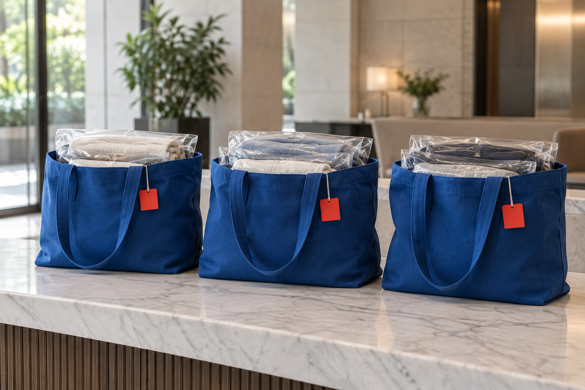
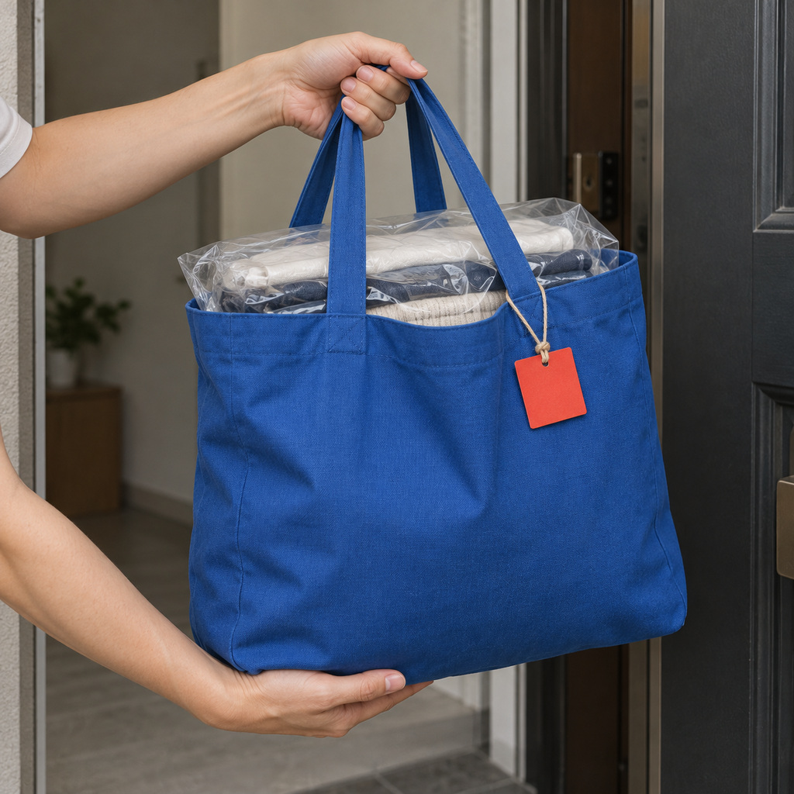
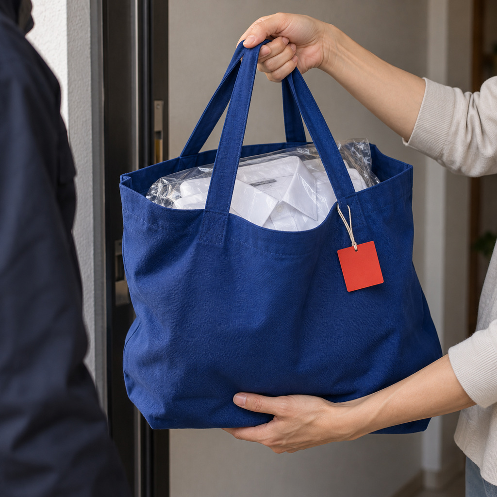

29區台中市全區收送
每週可排固定收送，也可每兩週、每月
LINE傳清單與照片，看過品項後報價
PROCESS — 合作流程
四步，
變成固定排程。
先看品項與照片再報價，不先承諾固定價格或天數。

列清單
品項、件數、頻率，用下方表單三分鐘列好。

傳 LINE
清單貼上，附幾張照片，門市看過品項後報價。

約交接
櫃台交接、管理室代收或送到門市，時段一起約。

固定收送
依每週、每兩週或每月的頻率收送。
三分鐘列好，
傳 LINE。
LINE 訊息預覽
複製清單並開啟 LINE 官方 @454foyks，貼上後再附照片。
用電腦看？
手機掃描加入 LINE 官方 @454foyks，再貼上清單。
常見合作對象
診所
醫師袍、工作服；中國醫大與科博館生活圈也可收送。
公司・中科
襯衫與公司件先列件數與領口狀況，可約公司櫃台收送。
店家・工作室
制服、工作衣、圍裙與毛巾，依髒污分開判斷。
宿舍・民宿
床組、厚被與布品，大件不用自己搬。
Q&A — 常見問題送洗前，
送洗前，
先問這幾題。
台中店家或公司有大量衣物可以送洗嗎？+
可以先用 LINE 提供品項、件數與照片詢問；門市確認物件狀態與怎麼處理後，再安排台中市內免費收送。
大量衣物收送要付收送費嗎？+
台中市內收送本身免費；清潔、洗護與其他整理費用另依品項與實際狀態判斷。
公司制服、毛巾和床組可以放在同一批詢問嗎？+
可以一起詢問，但請分開列出品項與件數，並拍材質標籤或特殊污漬；不同材質與用途會分開判斷。
大量送洗有固定價格或固定完成天數嗎？+
不承諾固定價格、最低消費或完成天數。需要先看品項、件數、材質與狀態，再由門市回覆。